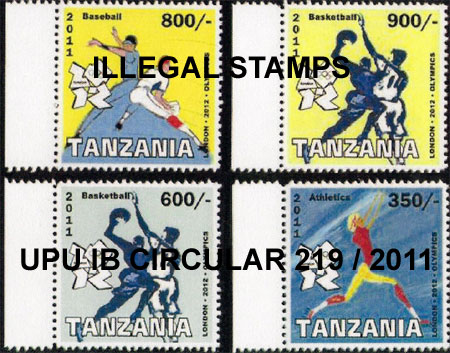
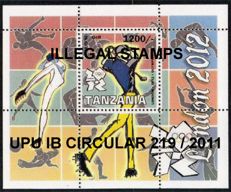
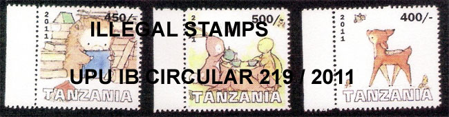
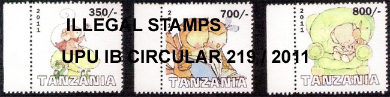

WADP, WNS and the Illegal Postal Stamps - Balance Sheet 10 years later
WADP, WNS and the Illegal Postal Stamps
Balance Sheet Ten Years Later
Summary
The author presents the results of research of the fight against the illegal stamps, as reflected by relevant documents issued by WADP, WNS and UPU, and he compares them with the actual situation on the philatelic market. His conclusion is that, despite the implementation of a labor-intensive and costly WNS online database, there are no signs that the situation has significantly improved in the last ten years.
Introduction
January 2012 offered us the opportunity to reflect on the state of the international philatelic market ten years after the introduction of the WADP's Numbering System (WNS) that was intended to decrease the illegal stamps and at the same time enhance the value of authentic stamps and their positive impact on postal history and philately, advance the promotion of peace and social causes, and add value to education in particular among the youth, among other things.
Postage stamps being an expression of sovereignty and ambassadors of their states, while at the same time enabling a commercial activity, it is the duty of every official and person working with philatelic products to be constantly monitoring the market to safeguard the integrity of the stamp and its potential revenue. An analysis tool like SWOT should therefore be used on a regular basis and its results should be published. This is not just for the concerned country, but each philatelic partner and in particular the UPU need to proceed regularly and objectively analyze the market and propose measures and solutions to redress where and when required.
In this context, it is useful to recall that the World Association for the Development of Philately (WADP) was created in 1997 to promote and develop philately, with the involvement of all representative philatelic partners. Its partners are today: the Universal Postal Union (UPU), theInternational Federation of Philately (FIP), the International Federation of Stamp Dealers' Associations (IFSDA), the International Association of Publishers of Postage Stamp Catalogues, the Stamp Albums and Philatelic Publications (ASCAT), the International Association of Philatelic Journalists (AIJP), and the INTERGRAF (International confederation for printing and allied industries). [1]

Concern for illegal stamps issues as shown by official documents
Illegal stamps had already been proliferating before the year 2000 (33 UPU circulars denouncing illegal stamps had been issued between March 1996 and September 2000). [1bis] This explains why “the problem of illegal stamps was high on the agenda of the General Assembly of the WADP which met on 12 June in Brussels, Belgium on the occasion of the BELGICA 2001 World Philatelic Exhibition. Over 60 UPU member countries together with all philatelic partner organisations (AIJP, ASCAT, IFSDA and FIP) agreed unanimously to the necessity of establishing of WADP Numbering System or WNS.” [2]
Consider that the main goal of the WNS was then the problem of illegal stamps. In 2001, the year just before the launch of the WNS,15 denouncements of illegal stamps were published, from the following countries: Centrafrique, Chad, Comoros, Georgia, Kyrgyzstan, Laos, Madagascar, Mali, Rwanda, Saudi Arabia, Senegal and United Arab Emirates (Comoros, Kyrgyzstan and Rwanda published twice). In 2002, the year of the launch of the WNS, six circulars were published at the request of Burundi, Kyrgyzstan, Morocco, Myanmar, the Russian Federation and Tadjikistan. In 2003, the year after the launch of the WNS, eight circulars were published at the request of Afghanistan, Côte d'Ivoire, Eritrea, Guinea, Rwanda, Kyrgyzstan, Mauritania and Uzbekistan.
The continued publication of UPU circulars on illegal stamps makes it difficult to understand why, based on the information available in the UPU and WADP documents themselves over the past few years, the interest of the WADP in fighting illegal stamps has actually strongly declined over time, as shown for example by the same document [1] of the WADP, in which the combat of illegal stamps is not cited a priority anymore.
The last reference to this combat can be found in a WADP document issued back in 2008 (!).
"15 The campaign against illegal issues, which were significantly reduced between 2005 and 2008, should continue, using two strategies:
– educating countries where this practice continues about the underlying reasons, ways of protecting themselves, and procedures for reporting illegal issues to the philatelic industry;
– continuing to disseminate to member countries UPU circulars exposing these issues. (However, reports will be checked more thoroughly and warning given of the consequences of unjustified reports .) "(emphasis ours)
Paragraph 15 above contradicts itself because the UPU website shows that no less than 31 of 55 UPU circulars, issued between 2004 and 2008 inclusive, concerned illegal stamps – new victim countries or countries sending reminders of the illegal stamps in their names. And denouncements of illegal stamps have continued during 2009, 2010 and 2011.
We should note that the lack of a UPU circular denouncing illegal stamps does not necessarily mean that there is a decrease in the number of illegal stamps or victim countries. It is common knowledge that many developing countries just do not have easy Internet access to do the market research to find out about illegal stamps. Many count on the goodwill of philatelists and stamp collectors to ask them directly about the legitimacy of their stamps.
Note also how the responsibility of checking information presented by the complaining postal administrations (P.A.) was shifted from the IB of the UPU, which used to perform preliminary research, to the P.A. themselves. It is not surprising that the number of denunciation of illegal stamps, as reflected by the UPU IB Circulars, has diminished.

But the crucial point that led to the reduction of denunciations is, most definitively, the assertion that: “The campaign against illegal issues, which were significantly reduced between 2005 and 2008 …” The justification of this assertion appears in different forms in the official UPU documents:
“- 105. These measures have enabled the estimated cost of illegal issues to be reduced from 50 million USD in 2005 to 200,000 USD in 2007 (figure confirmed by the issuing postal authorities). [4]
- 16. Prior to 2004, no studies had been conducted on the revenue generated from the sale of illegal issues (or on the resulting loss for issuing postal authorities). An unsubstantiated figure of 500 million USD had previously been put forward. An in-depth survey of the world philately market has since been carried out by questionnaire, which indicated that illegal issues represent a total of 100,000 USD .” [5]
Please compare these contradictory figures with those from the e-mail that the PWO received from Mr. J.-F. Logette (UPU Philately Expert, Philately and IRC's Program Manager, WADP Secretariat) on 20 July 2011:
“We would wish to say that the volume of illegal issues has considerably decreased and from 500 millions US $ (a number extracted from nowhere) in 2002 we have passed to 200 000 US $ in 2008 (a number extracted from a survey given out to the stamp issuing authorities of the UPU member countries).” [6]
It is unnecessary to comment further on such illogical statements and contradictory figures. It suffices to mention that the PWO has never received from Mr. Logette the data of the survey mentioned by him in the official documents, even though the PWO explicitly asked for them, being an AIJP partner and as such being then in a privileged position as part of the press to inform philatelists and stamp collectors. We weren't able to find these essential documents on the WADP, UPU or WNS sites either. This fact, accompanied by the carelessness with which the same Mr. Logette treats figures in other context (see above), does nothing to strengthen our confidence in his statements.
The Calamitous Results of a Ten Year Old WNS Policy that had not kept significant promises
In the most recent Circular No. 8 of the IB of the UPU, issued on 23 January 2012, The Ministry of Trade, Industry, Posts and Tourism of the Republic of Burundi informs UPU members of illegal stamps issued in the name of this country, released between 2009 and 2011. In this circular are mentioned 19 different topics of stamps that have been illegally issued. Link
Preliminary research of the supply of these stamps on the Web leads to the shocking result that hundreds of different stamps have been issued, as combined in different miniature sheets, perforated, imperforated, canceled to order, on first day covers, as color proof, etc. It is worth considering that we are speaking here about the recent illegal issues of only one country.
Some further research has shown that several different producers of stamps have flooded the market with Burundi stamps that share common popular topics. The mentioned UPU IB Circular 8 / 2012 doesn't display the images of the stamps that it describes, and for this reason it is not possible to distinguish among the legitimate and the illegal products. A good solution to this problem seems to be that adopted by the UPU in its IB Circular No. 219 / 2011 that denounces illegal stamps issued in the name of Tanzania. In this Circular, as its authors expressed it: "Samples of these illegal stamps are attached." This easy of identification permitted us to illustrate this article with some images of unambigously illegal stamps.

An increased attention is required in what concerns the legitimacy of the recent issues of Burundi, because the Burundi P.A. writes in the previously mentioned UPU IB Circular No. 8 of 23 January 2012 that: “We should also remind our philatelic partners and UPU member countries that our legal postage stamps issued since 2002 have been registered on the following website www.wnsstamps.ch " (emphasis added). So far (as of mid 2012) Burundi registered at the WNS for the year 2011 a total of only six stamps, which is a tiny amount compared to what is offered, legally or not, on the market.
On the other hand, we wouldn't be surprised to learn that one or another of major stamp catalog houses has included these stamps in their catalogues, for good or bad reasons, thus making the confusion total.
Not only has the WNS not been as successful as claimed in the UPU documents, but since 2002 (i.e. ten years ago now), the number of victim countries has not diminished, but rather increased - there are more victim countries today than before. There continue to be circulars denouncing illegal stamps, not only from new countries that had joined the WNS in the beginning and that did not have illegal stamps denounced previous to 2002 (examples, Benin, Burundi, Cameroun, Ivory Coast, Djibouti, Eritrea, Estonia, Gambia, Haiti, Malawi, Mauritania, Mozambique, Slovenia, Sudan, Tanzania, Uganda, Uzbekistan).

Countries that had denounced before 2002, even though they had joined the WNS in the early years, have continued to issue circulars against the proliferation of illegal stamps, and among them Afghanistan, Azerbaijan, Comoros, Congo (Democratic Rep), Georgia, Kyrgyzstan, Madagascar, Myanmar, Niger, Russian Federation, Rwanda, Western Sahara (Morocco).
There are countries with obvious illegal stamps (although some are not in the WNS) that continue to proliferate and that had already had circulars published, but that still have not had new ones published, such as Angola, Central African Republic, Chad, Congo (Republic of), Guinea, Laos, Mali, Mongolia, Senegal, Somalia, Tadjikistan, Turkmenistan, Ukraine
And we should not forget the illegal stamps in the name of the territories and provinces of Azerbaidjan (Nachivan, Republic of Nagorno-Karabakh), Georgia (Abhazia, Adjaria, Batum, South Ossetia), Moldova (Gagauzia, PMR Transnistria), Russia (Altay... Buriatia ...Chechenia --- Dagestan ... Franz Josef Land ... Kalmykia, Mordovia, Sakhalin, Udmurtia).
Why, after ten years, has the WNS not prevented the continued proliferation of illegal stamps? Why, after ten years, are not all UPU stamp issuing authorities authorized by the UPU part of the WNS? Why are there so many black holes in the WNS, in other words, so many years during which the UPU is waiting for the countries to send in their stamps for registration? Are these 500 million dollars questions?
We are aware of the fact that we have just superficially scratched the surface. A permanent information about philatelic partners and the philatelic industry really should be in the spotlight of the Philately Programme Manager, who should have the explicit responsibility of periodically inform the philatelic world, press included, about the real evolution of the market of illegal stamps.
Connection with the philatelic press
Last but not least, even if unsuccessful and nearing the end of his term, the Philately Program Manager and Member of the WADP Secretariat should better avoid assertions like:
“12 The International Bureau also expressed regret that designated operators had been associated with criticisms expressed through an article in the philatelic press containing erroneous and specious information.” [7]
The Philately Program Manager could still achieve something useful by concentrating his efforts on the fight of illegal stamps, which have proliferated during his mandate, and not by diverting criticism from the lack of action by the UPU philatelic team to some unspecified postal designated operators. These have the right to ask questions about the investment they make in the WNS and that need to protect the integrity of their country's name and their customers, as well as the stamp collectors and their partners.
Fighting against the press in this case is like fighting against its own image in the mirror, the “erroneous and specious information” being actually the one compiled and published in numerous official UPU IB documents by no one else than the Philately Programme Manager himself.
Conclusion
There are no signs that the situation of illegal stamps has improved significantly on the philatelic markets in the last ten years.
There is a flagrant lack of leadership and action of the Philately Program Manager, and a deadlock of the WNS.
We can only hope that the 25th UPU Congress in Doha will not accept the same assertions concerning the illegal stamps that he published in official documents in 2008, and that he pushes to have accepted, practically unchanged, in 2012.
Links to related articles appeared on this site:
- What is WNS Good For?
- No Help from the UPU
- Nigerian Stamp Sentinel
- Ten Lost WNS YearsReferences
1. WADP 2009 - 2012. Link
1 bis. “UPU Circulars issued concerning illegal/illicit/problem stamp issues (2003-1996) - Updated: 8 December 1993” - that had been published previously on UPU's website and that had been widely sent to the philatelic community
2. FLASH, No. 77, p. 25, Sept. 2001. Published by Fédération Internationale de Philatélie (FIP)
3. COMMITTEE 1 (LETTER POST)
World Association for the Development of Philately Management Committee
First World Association for the Development of Philately Management Committee meeting of the 2009–2012 cycle ( Berne, 4 November 2008, from 3 to 6 p.m.), Abubakar Argungu room
Philately development plan for the 2009–2012 cycle.4. UPU 24 th Congress. Report on the activities of the International Bureau 2005–2008
Doc 14 Report on the activities of the International Bureau 2005–2008 . Link
5. UPU 24 th Congress
Doc 23: DEVELOPMENT OF POSTAL MARKETS. Postal Operations Council report
Doc. 23, Add. 5 .DEVELOPMENT OF PHILATELY . Link6. E-mail from Mr. J.-F. Logette, sent to the PWO. Link.
7. POSTAL OPERATIONS COUNCIL
Committee 1 (Letter Post)
World Association for the Development of Philately Management Committee
Report of the eighth Management Committee meeting, held in Wuxi, China (People's Rep.), on 12 November 2011
Chairman's report IV. WNS working group
(POC C 1 WADP MC 2011.2–Doc 4)
|